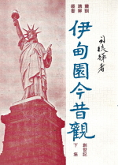

一 創世記(下)
- 亞伯拉罕又得子添孫 -- 從人體生育問題說起
- 以撒和利百加的家庭 -- 四位家庭成員的特性
- 以掃雅各兄弟䦧牆 -- 為什麼神愛雅各惡以掃
- 非利士人爭奪以撒的水井 -- 基督徒常常遭遇的困擾
- 以撒糊塗祝福錯了 -- 基督徒當心被騙的三件事
- 雅各逃避以掃遠走哈蘭 -- 雅各逃亡的透視
- 伯特利 -- 雅各重生之地 -- 耶和華在這裏
- 雅各娶两妻兩妾 -- 愛的種種
- 雅各成為大富翁 -- 富貴而歸故鄉的雅各
- 雅博渡口 -- 雅各復興之地 -- 基督徒復興的幾大轉變
- 雅各以掃二十年後喜相逢 -- 懼怕、禱告、餽贈、相見、和好
- 雅各全家在示劍住下來 -- 底拿被姦的三個因素
- 雅各全家離示劍上伯特利 -- 神的命令與人的遵行
- 雅各的家庭變故 -- 基督徒是否一帆風順
- 約瑟 -- 基督的表像 (一) -- 由一件彩衣說起
- 約瑟 -- 基督的表像 (二) -- 彩衣變成血衣
- 約瑟 -- 基督的表像 (三) -- 奴僕的衣服
- 約瑟 -- 基督的表像 (四) -- 因犯的衣服
- 約瑟 -- 基督的表像 (五) -- 宰相的衣服
- 約瑟異邦初逢諸兄 -- 三個強烈的對比
- 約瑟異邦再逢兄弟 -- 從便雅憫看雅各、流便、猶大和約瑟
- 約瑟試驗諸兄 -- 一隻銀杯的風波
- 以色列全家下埃及 -- 別是巴的獻祭
- 以色列會見埃及法老王 -- 登峰造極的以色列
- 以色列為約瑟和兩孫祝福 -- 承先啟後繼往開來的以色列
- 以色列為猶大祝福 -- 主耶穌基督是彌賽亞
- 以色列主懷安息 -- 生榮死哀萬世流芳
- 以信愛望結束創世記 -- 兄弟和睦同居何等善美